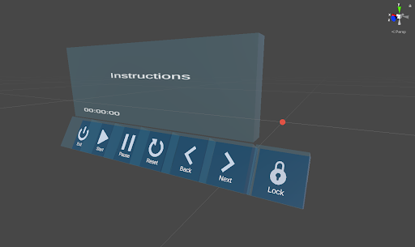
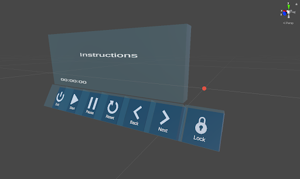

Features
Augmented Reality Interface
Augmented reality interface that users can interact with using their hands and fingers.
Animated Instructions
3D animated instructions that users can play around with. Animations can be placed on mapped surfaces.
Voice Control
Users are able to communicate with the interface for skipping, repeating a cooking step,... using their voice or hand gestures.
The AR App
An augmented reality cooking app that guides users through step-by-step instructions in Magic Leap. We believe this application can provide users with an intuitive and enjoyable culinary experience.
Cooking is supposed to be a fun process. However, many people struggle with constantly switching between stovetops and digital recipes when learning to cook something new. The hassle can be inconvenient and unsanitary. An Augmented Reality display is a perfect solution to this dilemma as users can refer to a recipe while keeping the food tractable at the same time. Previous projects in AR cooking are concepts of showing a 2D screen of recipe and instructions overlayed on top of the 3D environment, but none of them has fully taken advantage of ML’s support on spatial mapping and image tracking. The 2D interfaces are not as entertaining to interact with either. Also, some of them do have good user interaction but are hardcoded and only works in a specific scene. With Magic Leap, we believe we can create an application that users can easily use in their kitchen without complicated setup, and that provides consistent information on time and location of food. We are also planning on creating human-centered UI and delightful animation to make the cooking experience interactive and amusing.
Product Requirement Document
Blog
Weekly Blog Posts
Week 1
What We Did
This week consisted of us getting acquainted with each other as well as figuring out how to set Unity and the tutorials that we walked through. We also worked on brainstorming ideas for our projects. We have come up with the very basic idea that we want to help people communicate with each other during this time, however a deeper dive into actual ideas is needed. Each member of the group does similar work this week.
Plan For Next Week
Get a stronger idea for what we want to make. We will be meeting up and having more brainstorming sessions for getting a more solid idea down. Our goal is to get the website up and running by next week as well as finalize the initial design of our application. In addition, we also want to do some research about networking and creating a multiplayer game using Unity’s frameworks.
Week 2
What We Did
This week we tried to come up with ideas for our project. We want our experience to enable people to come together during these times. When brainstorming ideas, we were drawn to making an intimate experience for close friends or those in relationships. However there were a couple of issues with this, including making an intimate experience in VR as well as the fact that many of our ideas are already done outside of VR. During our lab time and presentation of our ideas with the staff, we decided that there were too many experiences that let people interact with one another, and so we switched our idea to a cooking AR project.
Plan For Next Week
We will iterate on our cooking idea, and will put together a pitch video for Tuesday as well as start to narrow our ideas down to fill out the PRD. Everyone will be working on this to get a solid idea down.
Week 3
What We Did
This week consisted of finalizing our idea for our project. Coming off of the initial project idea meeting from 4/9, we decided that we wanted to move in a different direction from a shared VR experience to making an AR app to help with cooking. For the duration of this week, we came up with more concrete ideas for these topics, and figured out specific deliverables. These meetings and working on the PRD consisted of all group members pitching their ideas and figuring out what’s possible or too much of a stretch goal. Apart from this, Yuansi organized a survey to gauge what users want from an AR cooking app, and Tim revamped the website.
Plan For Next Week
By next week, we want to have a basic prototype set up with buttons that can cycle through basic instructions on a virtually mapped space. Xiao will start designing and implementing the backend instruction system and a basic interface. Travis will start with mapping the room structure. Tim will start looking into hand tracking, and will try to get gestures to be recognized. Once gestures are recognized we can use them instead of the handheld controller. Yuansi will design the 3D dashboard, as well as ideate 3D models and animations.
Blocking Issues
All of the blocking issues at this time come from the fact that we need to talk to Joerg about the feasibility of a couple of our features. We want to start looking into whether our stretch goals are actually achievable with the Magic Leap system. These include object tracking, content persistence and social media integration.
Week 4
What We Did
This week we started deploying the components that are the initial building blocks for our augmented reality cooking application. Xiao started working on designing the backend system that includes objects and classes such as ApplicationState that keeps track of all the information about the application, Ingredients and Utensils for keeping track of information about the utensils in the kitchen and ingredients used for the recipe. There’s also a main scheduler that manages the state of the application and acts as a controller in a Model View Controller design. A Step class was also added to represent a step in the cooking process. This class has a timer and list of ingredients and utensils. Trung worked on a script that allows interactions with the AR objects using Magic Leap’s hand tracking. Users are able to pick up and move 3d objects around. We also experimented with raycasting with users’ fingers. We wrote a script that uses MLRaycast and MLHandTracking to cast a ray from the user’s index finger. We thought that this would be very useful later on when we start deploying user interfaces for our app. One option is to have the user able to interact with a distant interface using their finger. For this week, Yuansi worked on the initial design of the application’s interface as well as sketching out the 3D animations for our animated instructions. We also looked into how to import animations from Maya into Unity. Travis worked on a script that can be used to scan the physical objects and the room to collect meshing, using Magic Leap’s controller. This can be used to define where in the environment can we place digital objects and our interfaces as well as mapping the physical objects like utensils or a microwave.
Plan For Next Week
In addition we talked about each specific step in our cooking recipe and what each step is supposed to do. We also brainstormed on what 3D models and animations we need for each step.
For the rest of this week and next week, we plan to start doing 3D animations so we can have a basic cooking application where users can go through all the main cooking steps. This includes repeating a previous step, skipping one step. We also want to deploy a basic user interface so that the user can give instructions to the system.
Week 5
What We Did
In this week, our work was mainly focusing on improving, debugging our backend program, and initiating front end interface prototype. Xiao made updates on backend functions that allowed users to stop, start, or restart a timer for a step. The purpose of these functions is to tolerate accidents users can potentially experience when using our application. For example, if a user receives a phone call while cooking, the user should be able to stop an ongoing process. In addition, since importing recipes are easier as we formalized it with deserialization, we added more recipes into our system and made functions that helped users navigate through tutorials. Travis made a script that periodically updates spatial information, given that we want spatial information but also want to save computing power when it is not needed. Trung tried out rendering animation in a magic leap device. He also implemented basic controls of animation with magic leap hand tracking including translation and rotation. Yuansi has worked on interface design. She made a prototype of a hand menu that we are planning on including in our MVP.

Plan For Next Week
Before presenting MVP: We need to make an onboarding interface that allows the user to select recipes, as well as previewing a selected recipe (ingredients, utensils needed) before confirming. At the minimum, we need to make a preliminary interface that connects users with backend functions. UI controls should be properly implemented with hand tracking.
Week 6
What We Did
This week we continue putting together the smaller pieces to create a minimal viable product and get ready for the mid quarter presentation and demo. Trung worked on an onboarding interface that greets the user at the beginning of the app. This was integrated with hand pointer raycasting so that users can pick a recipe from a list of recipes that we included. Xiao worked on the code for loading the recipe onto the onboarding interface and a preview page for displaying the necessary ingredients and kitchen equipment. Yuansii designed and made some animations for the cooking instructions. She also worked on the overall user flow of the application. Travis started to integrate sounds into the system. We basically put in sound effects for button clicking and for when the timer goes off. This week we basically prepared for the mid quarter presentation and the MVP demo. We put a lot of work into the preparation.
Plan For Next Week
Next week, we plan to work on some other features that were initially included on our PRD but we were not able to implement. This includes a near menu that users can interact with using their finger, more animations and completing other functions on the back-end. We also received a lot of good feedback on Thursday about our app during the demo on Thursday so we plan to have a meeting among the team members next week to discuss how we can improve our current application.
Week 7
What We Did
Interface Exploration
This week we tried to make our tutorial persistent technically and we explored different versions of the user interface. We prototyped 3 types of interfaces: wall-mounted big interface with raycast from fingers, small 3D interface that attached to the user's hand, and a small 3D interface that follows the user's head and can be locked into the space. During open-house, we collected user testing data and decided to go with the small 3D interface that users can pin in their kitchen when cooking.
 

“Dumping our baby”: from animation to video
We also compared different ways to teaching: text, image, video, and animation. Although we originally wanted to create 3D animation for each step of the tutorial, we learned that given the constraint of our skills, time, and the render limit of mixed reality, animation isn’t the best way. It also distracts and slows down users a lot during cooking. We then decided to go with video instructions while making animation as an option for users to switch into if they are tired of watching video clips of cooking.
Cooking Simulation
We created a cooking simulation to teach users how to use a knife to cut sausages. We understand that cooking for the first time can be intimidating and cooking can be dangerous and confusing sometimes. We wish to help users practice in the virtual world before they start cooking in the real world.

Plan For Next Week
We will be implementing the video clips and modifying our main interface design. We will also create another simulation to teach users how to wrap a burrito like a pro. We will also finish the user experience by adding the landing and finishing parts to the whole experience.
We also intend to redesign our onboarding interface to get rid of raycasting and to unify all the interfaces in our app.
Week 8
What We Did
This week we settled on the small 3D interface that follows the user’s head. We changed all of our current interfaces to fit this theme, including the onboarding interface.
Throughout this process of integrating all the user interfaces to one theme, we decided to update our interface so that it looks a bit better and is a little bit more intuitive to use. The newly designed interface is shown below.
We also implemented more simulations for the user to go through which includes using a spatula to stir objects in a skillet. This is again shown below.
Plan For Next Week
We are implementing our new interface. This includes attaching colliders to the buttons and shuffling around our button interfaces. We are also setting up for the presentation on Tuesday, and for that we need to record a video. We are going to have two perspectives that we will edit together, one recording from the Magic Leap system, and another perspective of the kitchen so that people can see us actually moving around in the kitchen too.